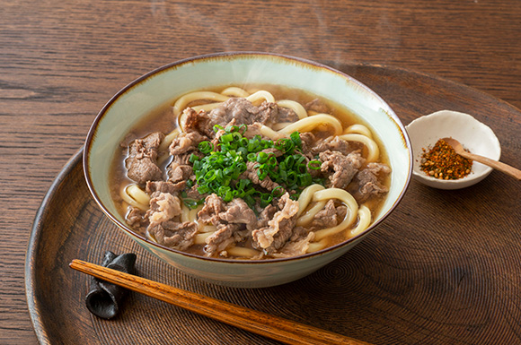
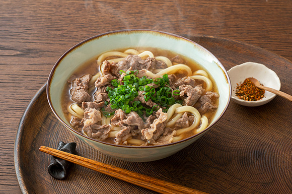
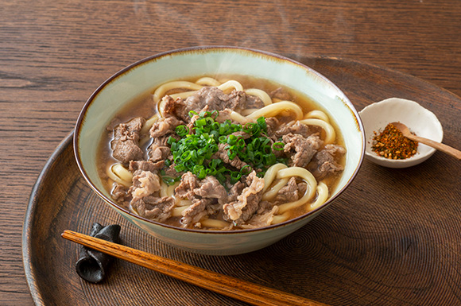

🍜 肉うどん（にくうどん）とは？
肉うどんは、日本の伝統的なうどん料理の一つで、**甘辛く煮た牛肉（または豚肉）**をうどんの上に乗せた温かい麺料理です。
🍜 よく使われる具材
- 牛肉（または豚肉）
- うどん麺。
- 青ねぎ。
- 紅しょうが（お好みで）
- 七味唐辛子（お好みで）
🍜 おすすめの食べ方
寒い季節にぴったりな、心温まる料理。 肉の旨味と出汁の風味が絶妙に合わさった、日本人にとってはとても懐かしい味。
うどん心 | Udon Kokoro

肉うどんは、日本の伝統的なうどん料理の一つで、**甘辛く煮た牛肉（または豚肉）**をうどんの上に乗せた温かい麺料理です。
寒い季節にぴったりな、心温まる料理。 肉の旨味と出汁の風味が絶妙に合わさった、日本人にとってはとても懐かしい味。